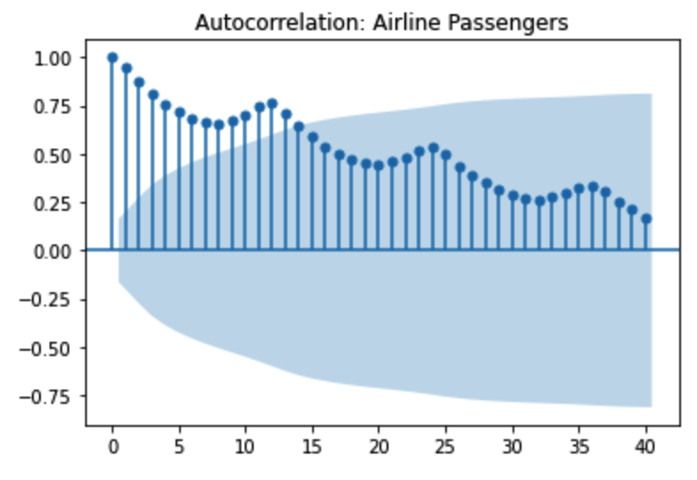

Time series forecasting is a crucial topic for data scientists. Autoregressive integrated moving average (ARIMA) is one of the famous linear statistical models for time series forecasting.
It usually outperforms machine learning and deep learning models for one-step forecasting on univariate datasets.
There are different variations of ARIMA. In this project, I use one type of ARIMA model which is SARIMAX,
Seasonal Auto-Regressive Integrated Moving Average with eXogenous factors. A restaurant visitors dataset has been used in this project.
Time Series Techniques
There are many types of time series forecasting models. Three main techniques are ARIMA, deep learning
recurrent neural network with long short-term memory, and Facebook Prophet.
1. ARIMA model has different variations, such as ARMA, SARIMA, ASARIMAX, VAR and so on.
It's the most popular model for times series analysis and the results are interpretable.
2. RNN LSTM model is a deep learning model which emerged only several years ago. It can be used to
analyze time-series data, sentences, audio, and so on. The input and output could be sequence to sequence (time series),
sequence to vector (sentiment analysis), vector to sequence (word prediction). However, RNN is not interpretable because
deep learning models are black boxes. Also, ARIMA models usually perform better than RNN in terms of time series analysis.
3. Facebook Prophet is developed by Facebook, specifically designed to forecast the business datasets that are
common at Facebook. (e.g. Daily, Minute, large datasets). It's an additive regression model which only requires
a few lines of code. It automatically detects changes in trends by selecting changing points from the data.
Time Series Properties
Time series data has particular properties, such as trends, seasonality, cyclical and so on.
Time Series Decomposition with ETS
ETS means Error-Trend-Seasonality. Visualizing the data based on its ETS is a good way to
build an understanding of its behavior. It's able to pull apart the trend, seasonal and residual from the
original data. We apply an additive model when the trend is more linear and trend components seem to be constant over time.
We apply a multiplicative model when we are increasing or decreasing at a non-linear rate.
SMA, EWMA, Holt-Winter Methods
SMA represents simple moving averages and EWMA represents the Exponentially weighted moving average.
SMA calculateS the average of a range of data by the number of periods within that range.
However, it has an issue which is that the entire model will be constrained to the same window.
EWMA has more recent data be weighted more than older data. Also, SMA's smaller windows will
lead to more noise rather than signal. It will always lag by the size of the window. Extreme
historical values can skew your SMA significantly. EWMA is a better choice. The amount of weight applied
to the most recent values will depend on the actual parameters used in the EWMA and the number of periods
given window size.
EWMA is better than SMA, but it fails to account for other contributing factors like trend and seasonality.
Holt-Winter Methods could solve this problem. The methods comprise of the forecast equation and three smoothing equations,
level (monthly data that displays a repeating pattern each year, L=12), trend, and seasonal. Two main methods for the seasonal part are additive and multiplicative.
ACF & PACF
ACF represents AutoCorrelation Function Plot and PACF represents Partial AutoCorrelation Function Plot.
One example of the correlation in time series is that we can compare the standard sales data against the
sales data shifted by 1 time step. Then we ask how correlated are today's sales to yesterday's sales?
The plot shows the correlation of the series with itself, lagged by X time units.
There are several types of the plot. The plot below shows a gradual decline trend and the
shadow area is the confidence interval. The second image is a sharp drop-off. The further away
you get with the shift, the less likely the time series would be correlated with itself.

PACF is that we plot the previous day residuals and the real values of the current day. The
ACF describes the autocorrelation between an observation and another observation at a prior
time step that includes direct and indirect dependence information. The PACF only describes the
direct relationship between an observation and its lag.
ARIMA
ARIMA represents AutoRegressive Integrated Moving Average. It's the most popular time series model.
While even though it's very powerful, it's not capable of perfectly predicting any time series data.
You can't apply it to time-series data that is not directly a function of time, such as stock data.
It performs well where data is directly related to the time stamp, such as the airline passenger dataset.
We can see clear growth and seasonality based on time. ARIMA model can't understand any outside factors, such
as new developments in jets engines, pandemics, and so on.
ARIMA models are applied in some cases where data show evidence of non-stationarity, where an
initial differencing step (corresponding to the "integrated" part of the model) can be applied one or
more times to eliminate the non-stationarity.
ARIMA (p,d,q)
AR (p): Autoregression:
A regression model that utilizes the dependent relationship between a current observation and
observations over a previous period. It indicates that the evolving variable of interest is regressed
on its own lagged values. Building the regression model off of previous y values.
I (d): Integrated:
Differencing of observations (subtracting an observation from the observation at the
previous time step) in order to make the time series stationary.
MA (q): Moving Average:
A model that uses the dependency between an observation and a residual error from a
moving average model applied to lagged observations. It indicates the regression error is
actually a linear combination of error terms whose values occurred contemporaneously and at
various times in the past.
Stationary
A stationary series has constant mean and variance over time, so it will allow our model
to predict that the mean and variance will be the same in future periods. If your data is not
stationary, you need to transform it to be stationary in order to evaluate it and what type of
ARIMA terms you will use.
Dickey-Fuller Test & Granger Causality Test
To find out data's stationery, we could use the Dickey-Fuller Test which performs a test in the form
of a classic null hypothesis test and return a p-value. If the p-value is smaller than 0.05, we
reject the null hypothesis and the data has no unit root and is stationary.
Granger Causality Test used to see if there is an indication of causality.
Evaluating Forecasts
We use AIC and BIC to evaluate ARIMA models.
AIC represents Akaike Information Criterion. It evaluates a collection of models and
estimates the quality of each relative to others. Penalties are provided for the number
of parameters used in an effort to thwart overfitting. BIC is very similar to AIC. It uses AIC
to evaluate the orders but we use RMSE to evaluate predictions.
ARIMA Orders
Identification of an AR model is often best done with the PACF. Identification of a MA model is
often best done with the ACF model. A sharp drop after lag "k" suggests an AR model. If there is a
gradual decline, it suggests an MA model. However, it's very difficult to read these plots in real life.
Usually, we use grid search to find out the best orders for ARIMA models.
SARIMAX
SARIMAX represents Seasonal Auto-Regressive Integrated Moving Average with eXogenous factors.
We just need to add seasonal and exogenous factors to the ARIMA model.
In this project, we have holidays in our dataset. It represents the exogenous factor which is the outside information.
Software used: Python
Packages used: statsmodel, pmdarima